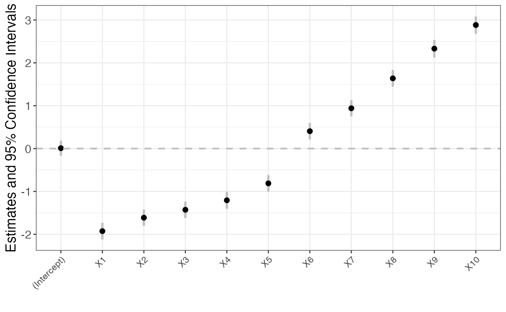

confint method for islasso objects
confint.islasso.RdComputes confidence intervals for islasso objects using a Wald-type approach.
Usage
# S3 method for class 'islasso'
confint(object, parm, level = 0.95, type.ci = "wald", trace = TRUE, ...)Arguments
- object
A fitted model object of class
"islasso".- parm
A specification of which parameters are to be given confidence intervals, either a vector of numbers or a vector of names. If missing, all parameters are considered.
- level
The confidence level required.
- type.ci
Character. Only Wald-type confidence intervals are implemented yet! Set
type.ci = "wald"to use estimates and standard errors to build the confidence interval.- trace
Logical. If
TRUE(default), a bar shows the iterations status.- ...
Additional arguments for methods.
Examples
n <- 100; p <- 100; p1 <- 10
beta.veri <- sort(round(c(seq(0.5, 3, length.out = p1 / 2),
seq(-1, -2, length.out = p1 / 2)), 2))
beta <- c(beta.veri, rep(0, p - p1))
sim <- simulXy(n = n, p = p, beta = beta, seed = 1, family = gaussian())
o <- islasso(y ~ ., data = sim$data, family = gaussian())
ci <- confint(o, type.ci = "wald", parm = 1:11)
ci
#> 2.5 % 97.5 %
#> (Intercept) -0.1670 0.1844
#> X1 -2.1205 -1.7329
#> X2 -1.8034 -1.4229
#> X3 -1.6206 -1.2367
#> X4 -1.4054 -1.0080
#> X5 -1.0053 -0.6189
#> X6 0.2125 0.5971
#> X7 0.7503 1.1287
#> X8 1.4421 1.8337
#> X9 2.1272 2.5349
#> X10 2.6811 3.0830
plot(ci)
